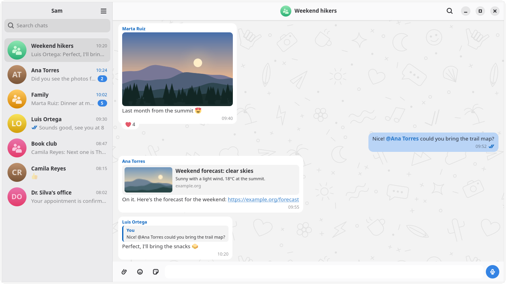

WhatsApp on GNOME, in 64 MB.
An unofficial, native client. It speaks the protocol itself instead of wrapping WhatsApp Web, so it looks like the rest of your desktop and stays light on memory.
v0.1.0 is the first release. Wassup is in early development.

What it does
One account, linked as another device of your phone.
- Link by QR codeYour recent history comes with it, and older messages load as you scroll up.
- Every kind of message you use mostText, photos, videos, documents, stickers, GIFs and voice notes, with replies, reactions and link previews.
- MentionsA mention shows the person's name. Typing @ in a group lists its members, and a mention of you notifies even in a muted chat.
- Stickers from your phoneYour favorites, kept in sync, plus recent and animated ones. New ones can be made from images.
- Ticks, counts and picturesDelivery and read marks, unread counts, profile and group pictures. Disappearing messages and locked chats work as on the phone.
- Notifications with the window closedThey can hide the message text, and a status icon shows the unread count.
- SearchFind a chat, or a message inside one.
- A GNOME appGTK 4 and libadwaita, following the GNOME guidelines. Works with the keyboard and screen readers, and is translated into Spanish.
Light on memory
Clients that wrap WhatsApp Web carry a browser with them. Wassup talks to WhatsApp directly.
Memory in use, daemon and window together (PSS, MB)
A real account of 29 chats and about 3,500 messages, no chat open. The other clients ran on the same account but with different history, so read it as an order of magnitude. Method and every figure: docs/performance.md.
Install
The first release is an RPM for Fedora 44. Other distributions build it from source.
sudo dnf install ./wassup-*.x86_64.rpm
Building it yourself: docs/development.md covers the daemon and the window, docs/packaging.md the RPM.
If the window says it can't reach the Wassup service, start the daemon, and read its log if that doesn't help:
systemctl --user start wassupd.socket
journalctl --user -u wassupd
Using it
Closing the window leaves the daemon running, so notifications keep arriving.
- QuitAfter confirming, stops both the window and the daemon until you open Wassup again.Ctrl Q
- PreferencesCtrl ,
- Keyboard shortcutsCtrl ?
- Show or close the windowRun
wassup --toggle. On Wayland, bind it to a key in Settings → Keyboard → Custom Shortcuts.
How it works
Two processes that talk over a Unix socket with Protocol Buffers.
- GoThe daemonSpeaks the protocol with whatsmeow and stores messages in SQLite. It runs as a systemd user service, so messages keep arriving when the window is closed.
- RustThe windowGTK 4 and libadwaita, drawing in software by default to save memory. Emoji come from a bitmap font in the package, because the default emoji font adds hundreds of megabytes once emoji appear.
What comes next
Each version has a theme, in this order. There are no dates.
- 0.2.0A chat as faithful as the phone'sEdited and deleted messages, notifications for reactions, forwarding.
- 0.3.0More kinds of messagePolls, contacts and locations; waveforms for voice notes and thumbnails for videos you send.
- 0.4.0Managing chatsArchiving, muting, pinning and deleting chats, and showing which ones are muted.
- 0.5.0Accounts and accessSeveral accounts at once, linking by phone number or passkey, and an application lock.
- AnyA COPR repositorySo Fedora installs and updates Wassup with dnf.
Calls are not planned. The full list is in the roadmap; bugs and requests go to the issues.